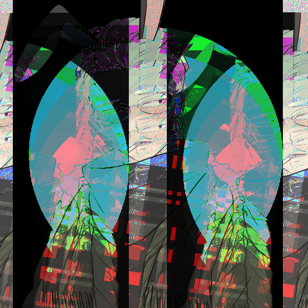
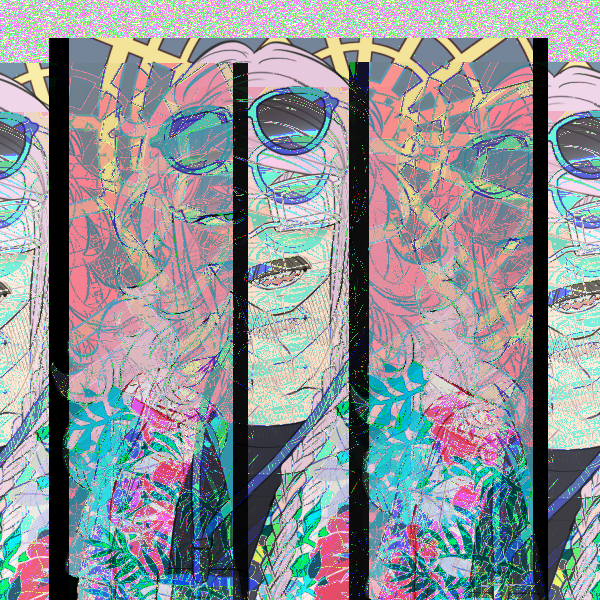
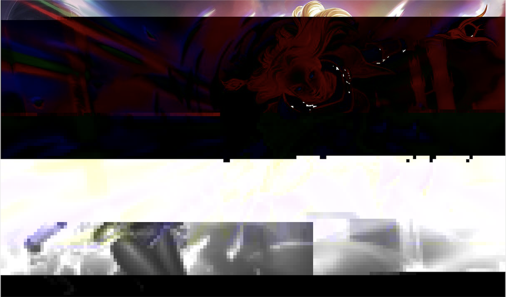
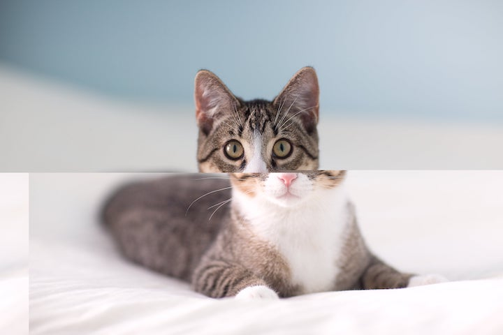

This series I want to make Chaos.
I picked two colorful images and looped the images in audacity.
I made them undefinable and I wanted to make a sense of the Japanese color and it worked out.
Glitch using audacity:
Glitch using audacity:
Glitch using textEdit: lux
Glitch using textEdit
